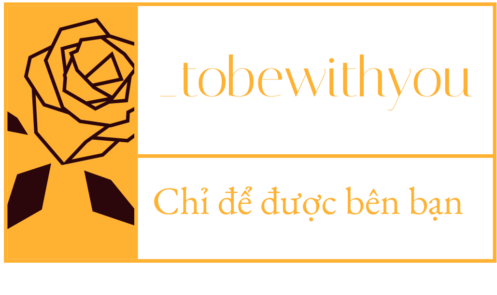

<!DOCTYPE html>
<html lang="en">
<head>
    <meta charset="UTF-8">
    <meta name="viewport" content="width=device-width, initial-scale=1.0">
    <title>Document</title>
</head>
<style>
    .footer {
      background-color: #11290ed5;
      color: #fff;
      padding: 40px 20px;
    }
    .main-footer {
        display: flex; 
        flex-wrap: wrap; 
        justify-content: space-between; 
        gap: 40px;
    }
    .footer-col {
        flex: 1; 
        min-width: 200px;
    }
    .footer-col button {
        padding: 10px 20px; 
        background-color: white; 
        border: none; 
        cursor: pointer;
    }
    .footer-col button:hover {
        background-color: #f0f0f0; 
    }
    .footer-logo {
        height: 100px;       
    }
</style>
<body>
    <footer class="footer text-center">
        
        <div class="main-footer">
          <!-- Cột 1: Logo và liên hệ -->
          <div class="footer-col">
            <h3>THÔNG TIN</h3>
            <p>Họ và tên: Nguyễn Vũ Thủy Tiên</p> 
            <p>MSSV: DH52201547</p> 
            <p>Lớp: D22_TH08</p>  
            <p>Thứ 2 Ca 2</p>
            <p>📞 0368.860.6</p>
            <p>✉️ contact@gmail.com.vn</p>
            <p>📍 Biển Hồ 10A, Vinhomes Ocean Park, Gia Lâm, Hà Nội</p>
          </div>
      
          <!-- Cột 2: Dịch vụ khách hàng -->
          <div class="footer-col">
            <h3>DỊCH VỤ KHÁCH HÀNG</h3>
            <p>Điều khoản và điều kiện</p>
            <p>Chính sách trả hàng hoàn tiền</p>
            <p>Chính sách giao hàng</p>
            <p>Chính sách quyền riêng tư</p>
            <p>Hướng dẫn mua hàng online</p>
          </div>
             <!-- Cột 3: Cẩm nang sử dụng -->
             <div class="footer-col">
                <h3>CẨM NANG SỬ DỤNG</h3>
            <p>Tại sao nên chọn bạc cao cấp?</p>
            <p>Cách làm trắng bạc tại nhà</p>
            <p>Phân biệt các loại bạc S925, S999,...</p>
            <p>Những tác dụng của bạc</p>
            <p>Cách bảo quản trang sức bạc</p>
          </div>
      
          <!-- Cột 4: Thông tin chung -->
          <div class="footer-col">
            <h3>Ý KIẾN ĐÓNG GÓP</h3>
            <p>LiLi luôn mong nhận được ý kiến đóng góp từ bạn để nâng cấp dịch vụ và sản phẩm tốt hơn.</p>
            <p>Nếu bạn có ý kiến, đừng ngần ngại đóng góp cho LiLi nhé. LiLi xin cảm ơn!</p>
            <button>GỬI Ý KIẾN</button>
          </div>
        </div>
        </footer>
      
</body>
</html>